Overview
Public-facing SSH services are common targets for brute-force and credential-stuffing attacks. I deployed a Windows OpenSSH honeypot, generated SSH activity from a Kali attacker machine, validated that logging was ready for SIEM ingestion, and contained the attacker using Windows Defender Firewall.
- Deploy a Windows OpenSSH honeypot
- Verify SSH logging for SIEM ingestion
- Simulate successful and failed SSH logins from Kali Linux
- Detect the attacker and source IP in Event Viewer
- Block the attacker IP and validate the block
Workflow: Hardening → Detection → Investigation → Response → Documentation
Installing OpenSSH Server on Windows
Verify OpenSSH availability
Get-WindowsCapability -Online | Where-Object Name -like 'OpenSSH*'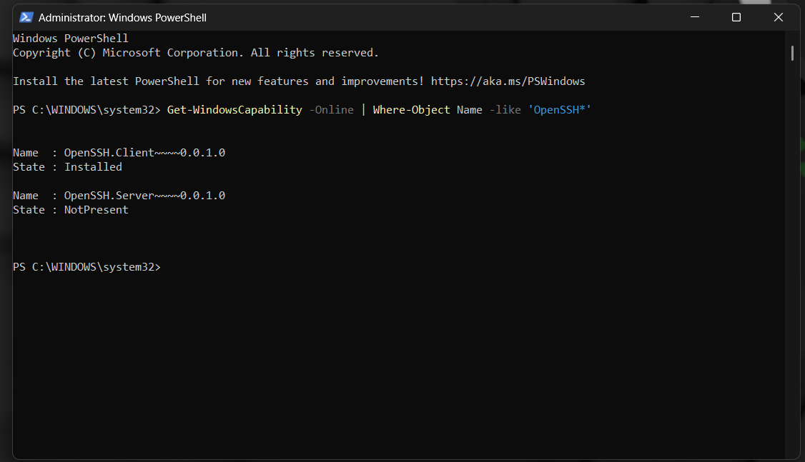
Install OpenSSH Server
Add-WindowsCapability -Online -Name OpenSSH.Server~~~~0.0.1.0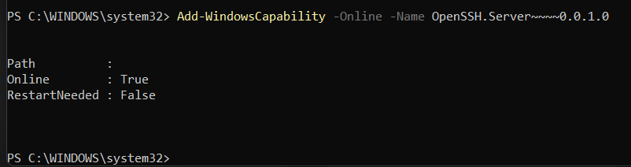
Start and enable the SSH service
Start-Service sshd
Set-Service -Name sshd -StartupType Automatic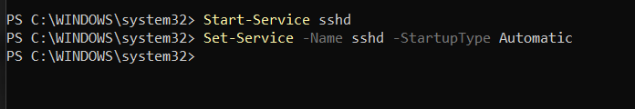
Confirm service status
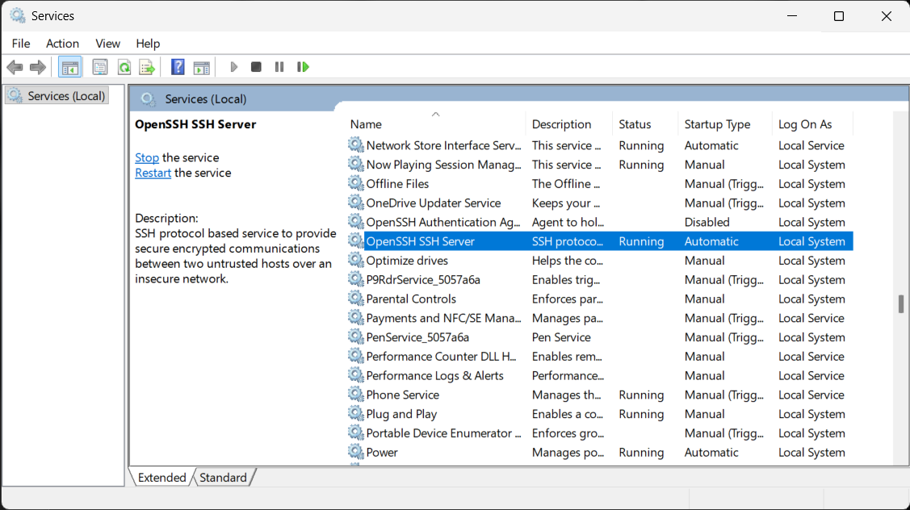
Configure and verify logging
Set the DefaultShell registry key
New-ItemProperty -Path "HKLM:\SOFTWARE\OpenSSH" `
-Name "DefaultShell" `
-Value "C:\Windows\System32\WindowsPowerShell\v1.0\powershell.exe" `
-PropertyType String -Force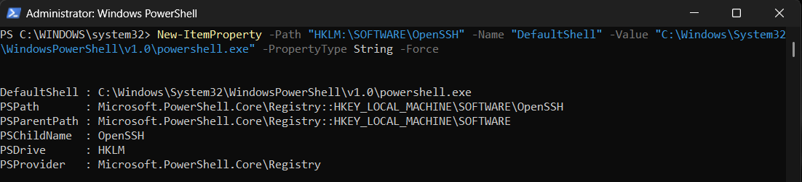
Locate SSH logs in Event Viewer
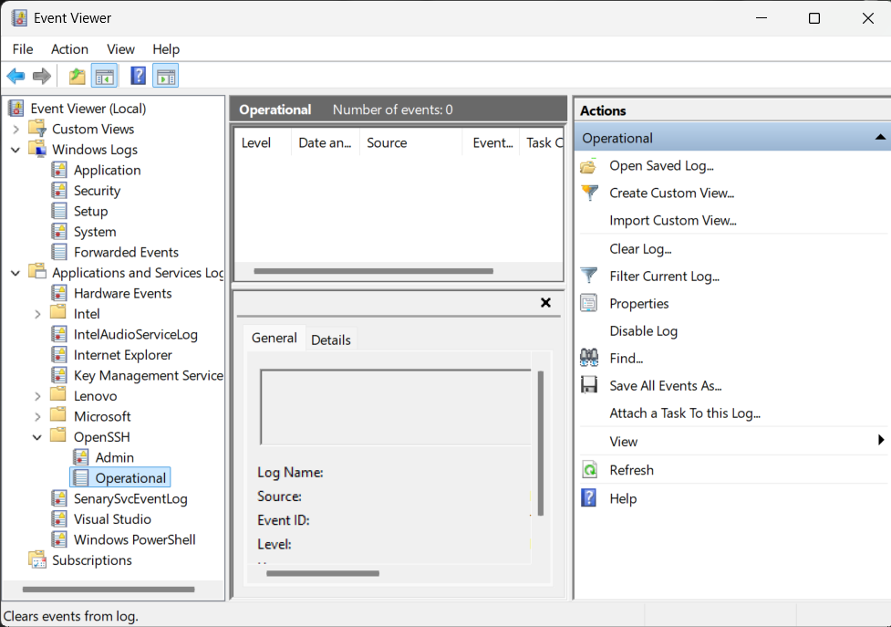
Simulate an SSH attack from Kali
Successful SSH login
ssh sshlab@192.168.1.216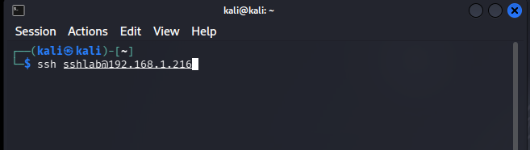
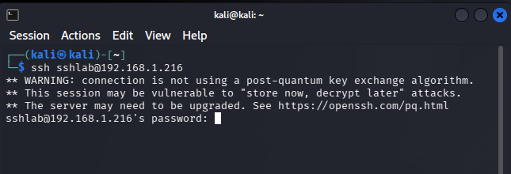
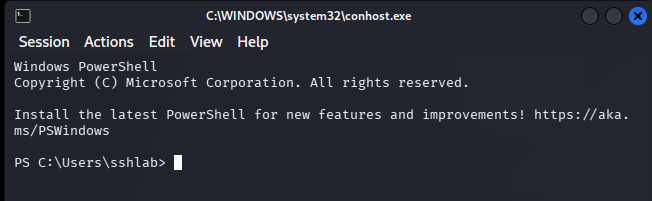
Failed SSH login attempts
ssh sshlab@192.168.1.216
Permission denied, please try again.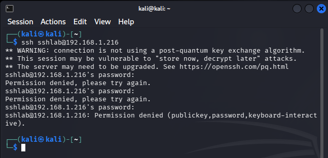
Detect the attack in Windows logs
Identify the source IP in OpenSSH logs
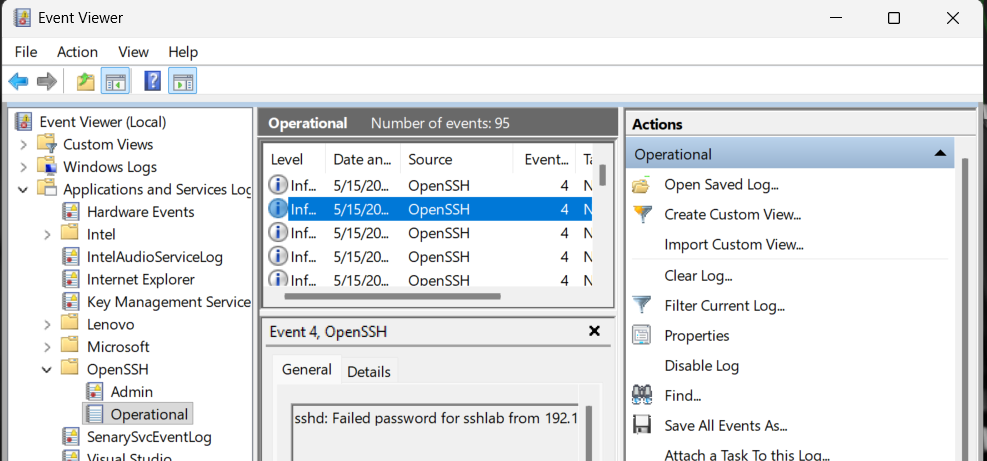
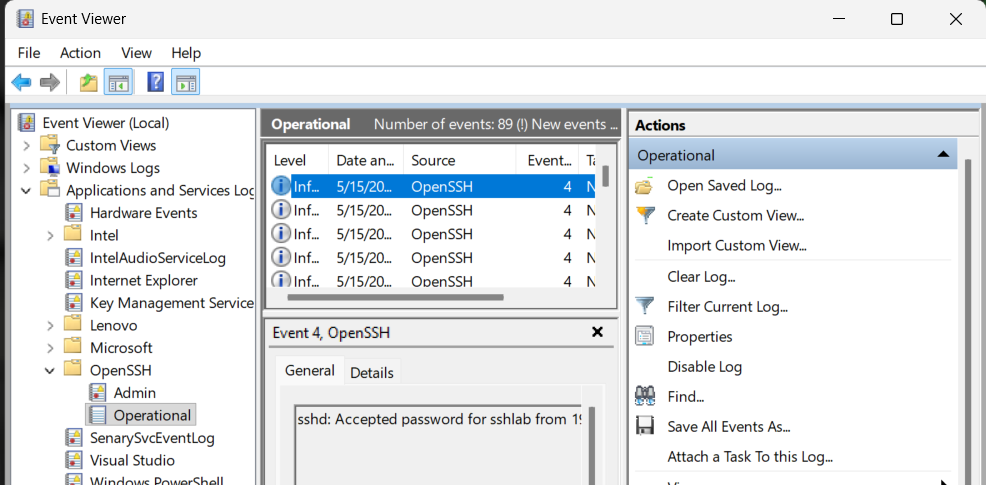
Correlate with Security log events
The OpenSSH log shows the source; the Security log confirms the outcome:
4624 for the successful logon and 4625 for the failures.
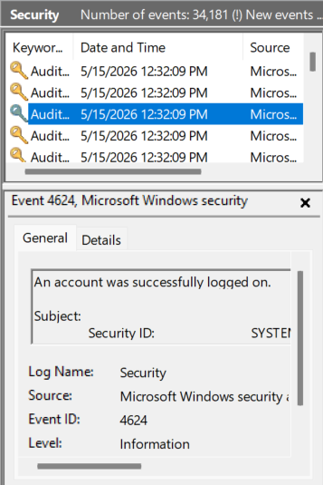
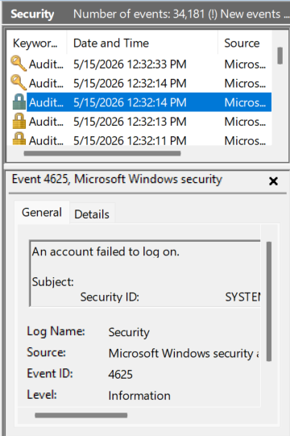
Mitigation: block the attacker IP
I created an inbound Windows Defender Firewall rule scoped to the attacker's address.
wf.msc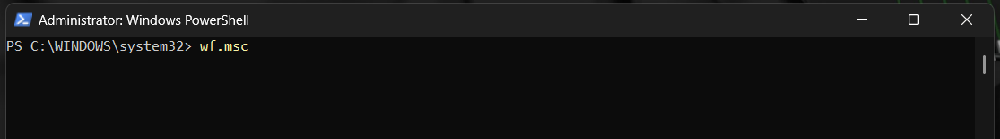
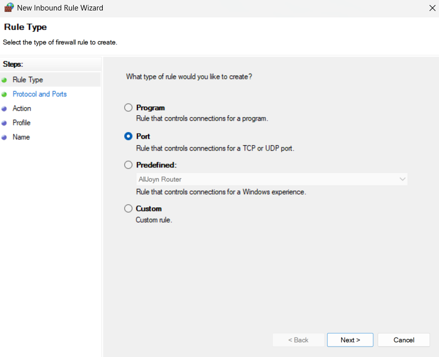
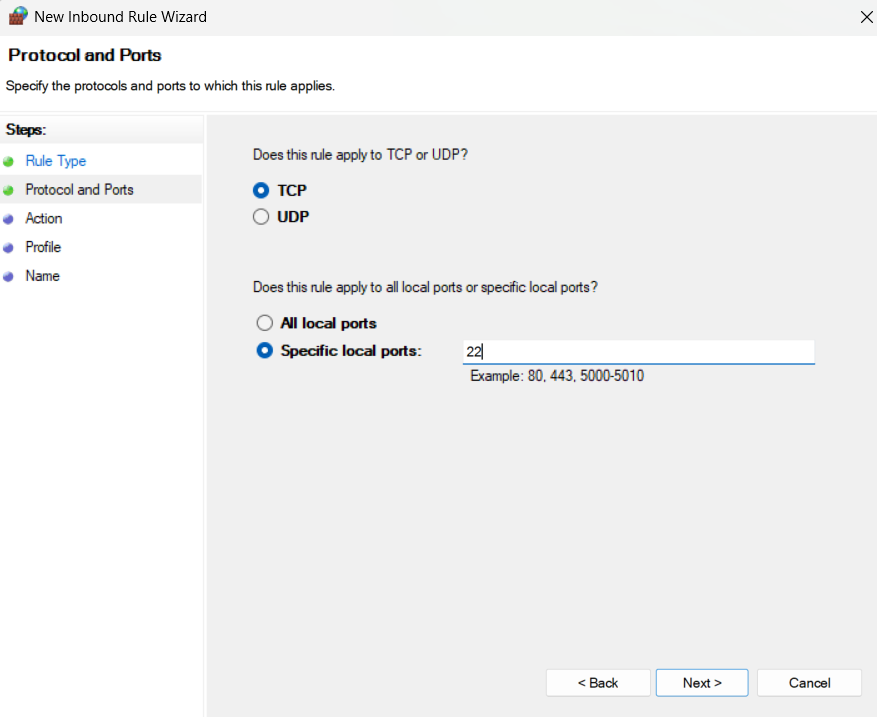
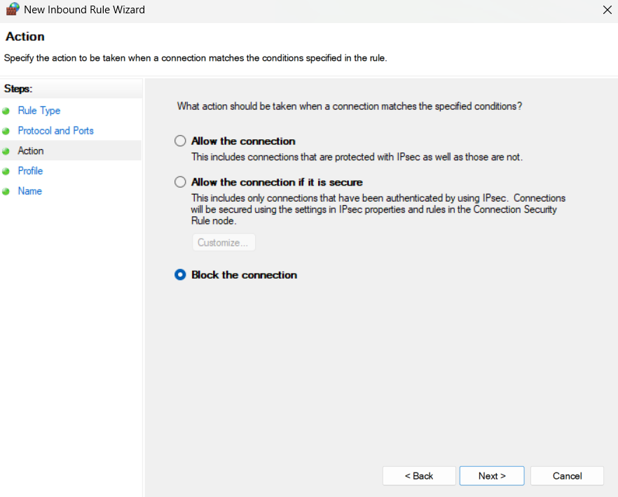
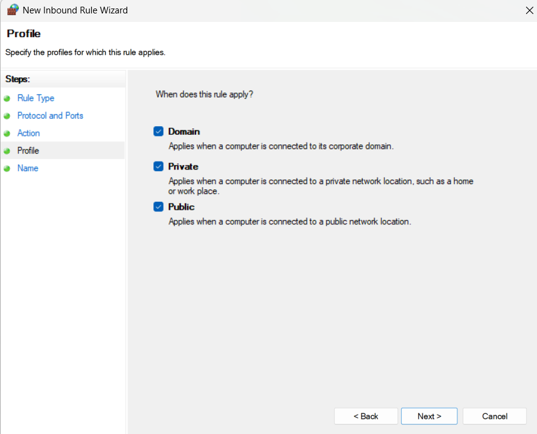
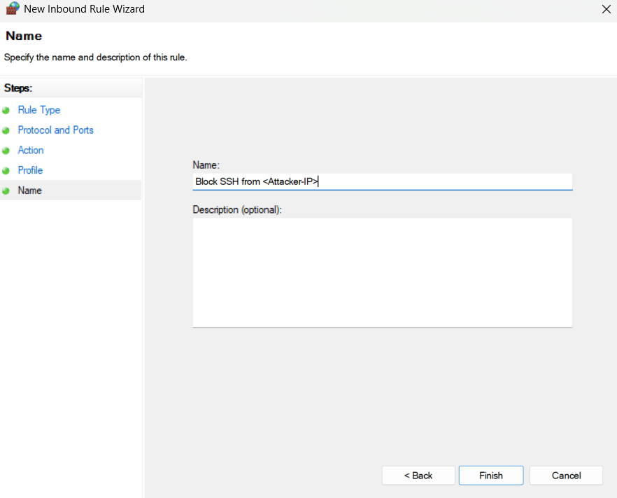
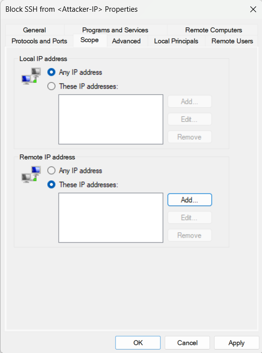
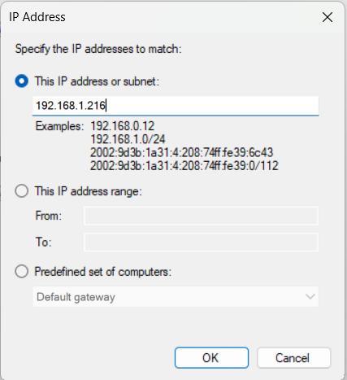
The same rule from the command line:
New-NetFirewallRule -DisplayName "Block SSH attacker" -Direction Inbound `
-Protocol TCP -LocalPort 22 -RemoteAddress <attacker-ip> -Action BlockValidate the rule
ssh sshlab@192.168.1.216
ssh: connect to host 192.168.1.216 port 22: Connection timed out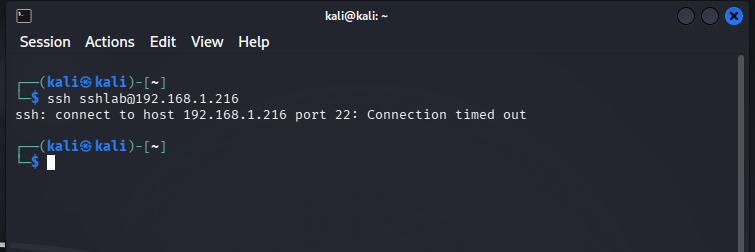
Summary
Starting from a default Windows installation, I:
- Installed and configured a Windows OpenSSH honeypot
- Verified SSH logging for SIEM ingestion
- Simulated successful and failed SSH logins from Kali Linux
- Identified the attacker and source IP in Event Viewer, correlated with 4624/4625
- Contained the attacker with a Windows Defender Firewall rule
- Validated that further attempts from that IP were blocked
What I'd do next in production
- Forward the OpenSSH and Security logs to a SIEM and alert on repeated failures (see the SIEM lab).
- Disable password authentication in favor of SSH keys.
- Automate blocking with a threshold-based response instead of a manual rule.